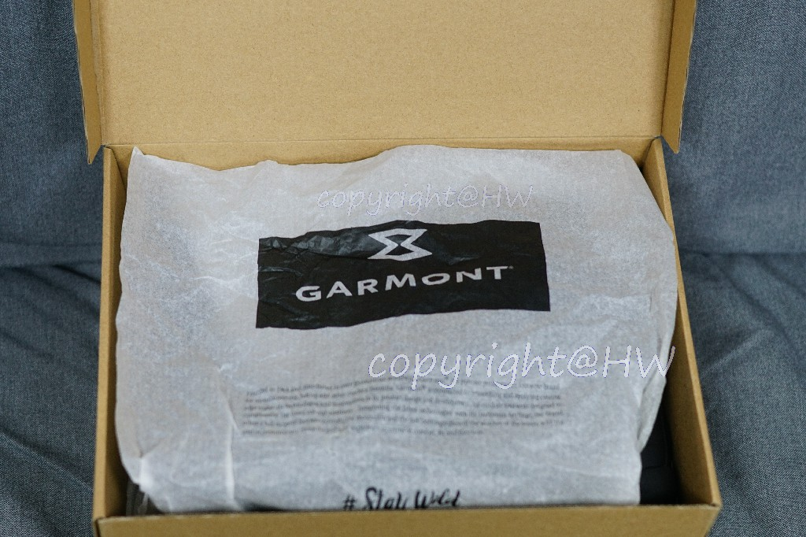
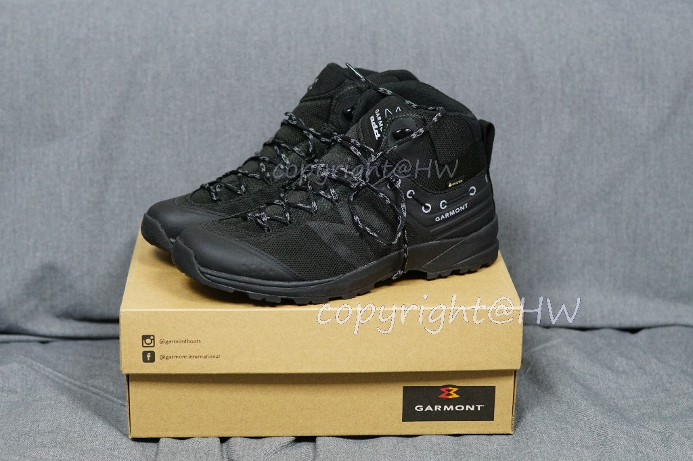
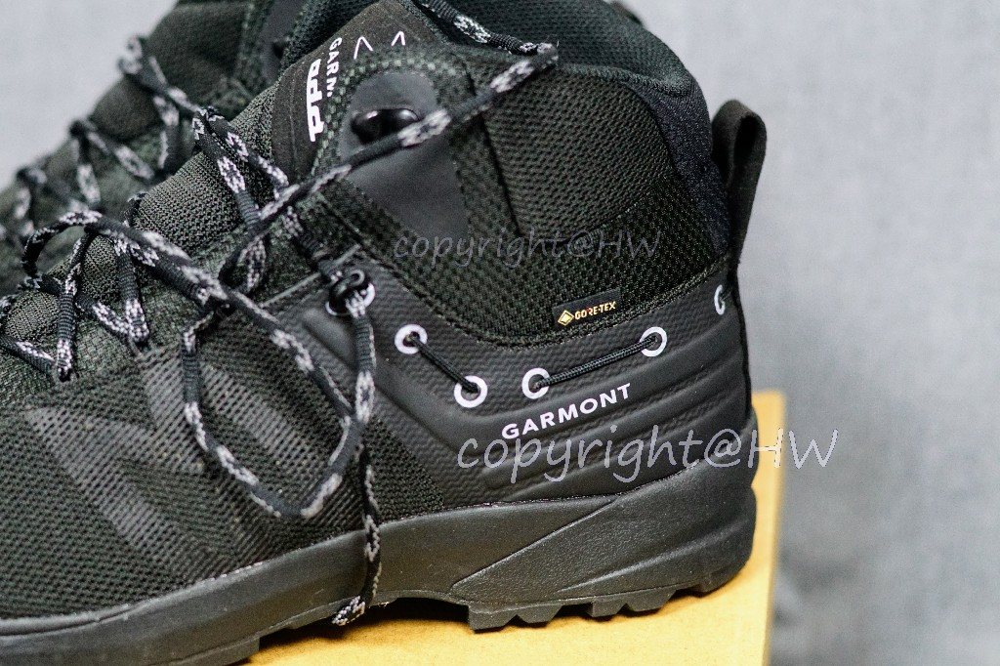
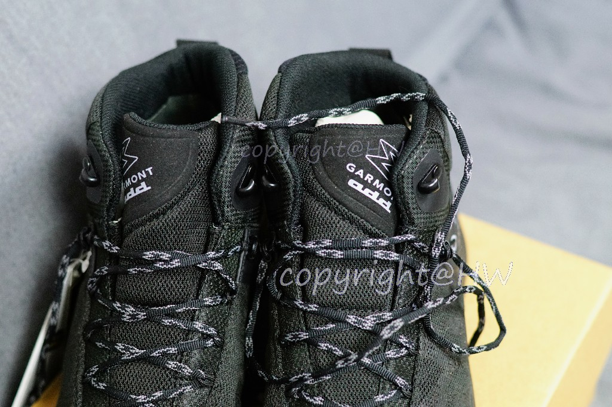
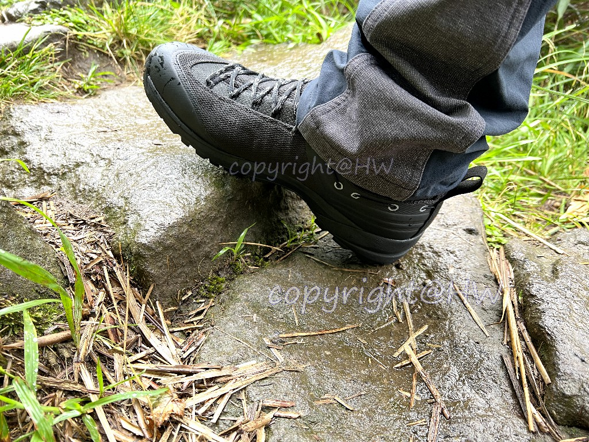
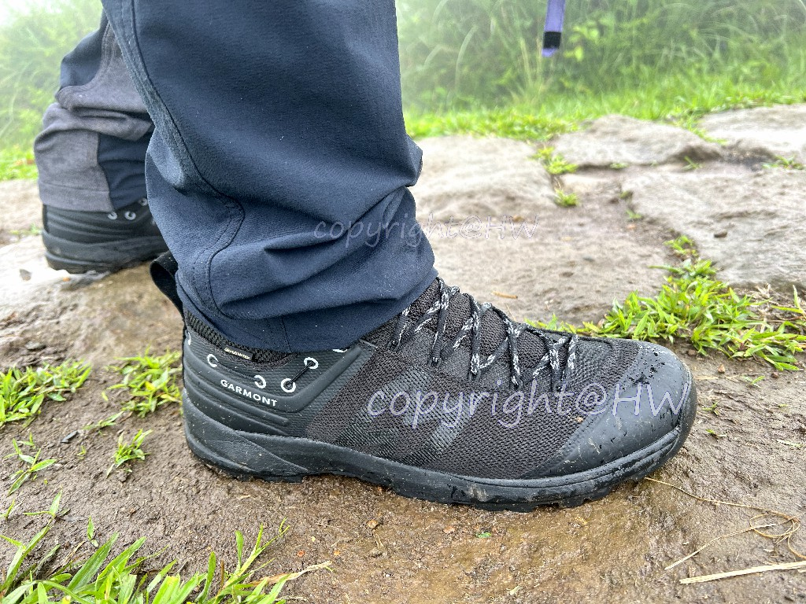
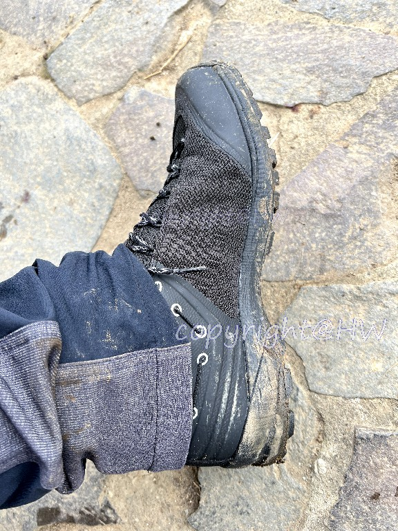
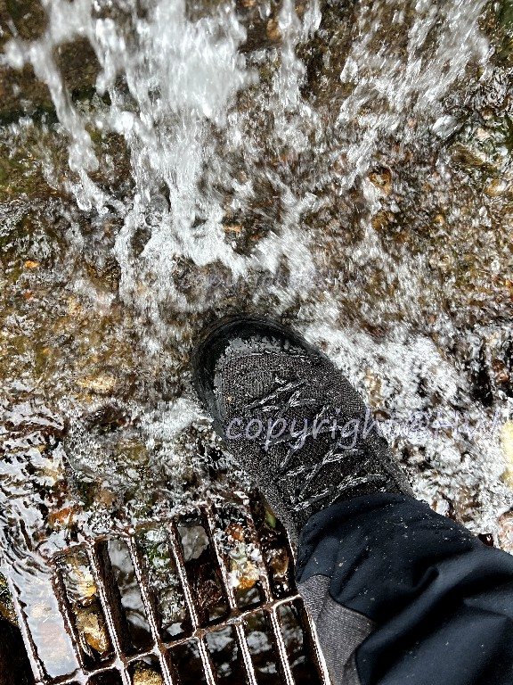
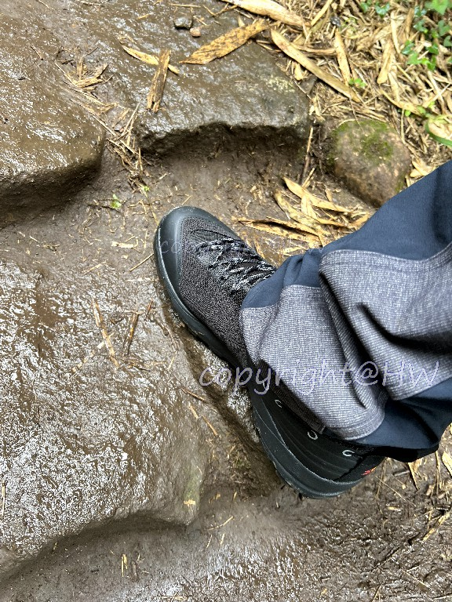

Garmont karakum 2.0 GTX登山鞋開箱
前言
上個月底吃著餅乾哼著歌在走臺北大縱走第六段時，突然間踢到一個石頭，跟著我五六年開啟我登山之路的merrell capra bolt鞋底就給離家出走了! 幸好當天風和日麗，還是順利地下山了。

這時候FB彷彿被監控般的跳出迪卡儂也開始賣merrell的登山鞋款，下班後約了同事去逛逛順便試穿，試穿之後雖然覺得還可以但沒有馬上下手。於此同時，也發現城市綠洲中和店正準備改裝出清就去逛逛，看是否有便宜可撿。出清品基本上就是放置了一段時間的庫存品，可能會有的疑慮就是鞋底或材質老化比較容易壞，但因為這雙merrell也是在城市綠洲打折的時候買的，我想是不會有太大問題吧，而且有保固三個月。
Garmont karakum 2.0 GTX
Garmont
- Garmont成立於1964年公司位於義大利特雷維索省，並在全球超過40多個國家擁有經銷商。Garmont的品牌創立精神在於鼓勵人們向外出走，這裡的走出去指的是一種心靈狀態，而非特指某個地方。其創辦人相信人們沒有任何區別，為了一個共同的目標而共同努力，一起達到新的高峰並拓寬視野。本著此理念不斷推動著Garmont的設計和創新發展。
產品特點與外觀
打開箱子後可以看到一張印有品牌名稱的紙覆蓋著

主角登場!

- Garmont 特有的 Anatomically Directed Design (add®) 立體結構導向設計，增強足部的穩定性
- 足踝鞋口不對稱設計
- 鞋跟固定(HELLLOCK)設計
- 立體結構鞋舌
- Gore-Tex Extended Comfort
- Vibram S1381 Megagrip 鞋底


實測心得
買到鞋子的隔天就立刻出發臺北大縱走，本來預想是3,4段連走，沒想到剛到小油坑就開始下雨，只好改變計畫僅走第3段，順便測試下鞋子防水性與防滑性。


臺北大縱走第3段路線從小油坑起登，經由擎天崗至風櫃口，有走過的朋友應該會知道其中幾個路段其實還蠻陡的且是石子階梯，在下雨時容易滑倒。這次穿著karakum 2.0 GTX大部分的路面走起來是很有信心的，僅有少數石頭上會稍微滑一下，整體來說表現不俗。


這邊要提一個觀念，再怎麼好的鞋子都沒有辦法保證不會滑，重要的還是多訓練自己挑選路徑的技巧以及判斷路況的能力，才能安全的悠遊於山林之中。

體驗總結
整體而言，Garmont karakum 2.0 GTX是一款性價比很高的登山鞋，以下優缺點皆為個人體驗後的感想，提供給各位參考。
優點
- 價格便宜，出清價2590再折100，穿壞不心疼
- Gore-Tex材質與megagrip黃金大底
- 外觀低調卻有細節
- 重量算輕
缺點
- 楦頭對我來說大小適中，但若需長時間行走的話希望可以再寬一點較為舒適
- 目前感受鞋底較硬，可能多穿幾次後會改善
- 略為悶熱，但最近天氣實在太熱在低海拔山區應該很難避免
後記
6/26 再次穿去走了臺北大縱走第四段，鞋底已較為軟化舒適，但天氣仍為悶熱。
更多當天登山照片亦分享於健行筆記
本部落格所有文章除特別聲明外，均採用 CC BY-NC-SA 4.0 許可協議。轉載請註明來自 阿緯碎碎唸！
評論